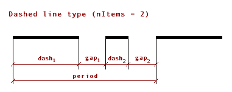

API_LinetypeType
Line type attribute representation.
typedef struct {
API_Attr_Head head;
double defineScale;
double period;
double height;
API_LtypTypeID type;
short nItems;
short filler_1;
} API_LinetypeType;
Members
- head
- Contains the name, index, and flags of the attribute.
- defineScale
- The original scale the line type is defined with; this value is used only with
APILine_ScaleWithPlan(otherwise it should be 1.0). - period
- Length of a period (except for solid lines).
- height
- Height of the line type (0.0 for solid and dashed lines).
- type
- Main selector for type parsing. The possible values are shown in the API_LtypTypeID enumeration.
- nItems
- Number of items in the line type (for dashed/symbol type).
Remarks
The flags field of the header can take the following values:
Value
Description
APILine_FixScaleThe line type parameters are defined with fixed values in millimeters as the line will appear on the printout.
APILine_ScaleWithPlanThe line type parameters are defined in meters at a given floor plan scale (
defineScale); on the printout the lines of this line type will be scaled considering the actual scale.
The type of the linetype can take the following values:
Value
Description
APILine_SolidLineSolid line.
APILine_DashedLineDashed line (contains dashes and gaps between them).
APILine_SymbolLineSymbol line (can contain different 2D shapes).
A solid line is a straight line, without any gaps. You need to fill only the fields of the API_LineTypeType structure to create such a line type.
To create a dashed line, you need to specify the following fields of the structure:
Field
Description
periodThe length of the period of the dashed line type (the total length of one segment).
nItemsThe number of items in the dashed line type.
ltype_dashItemsin API_AttributeDefThis is a handle of API_DashItems, where the
dashandgapfields describe the length of the visible and invisible part of one item, respectively.
To create a symbol line, you need to specify the following fields of the structure:
FieldDescription
periodThe length of the period of the symbol line type (the total length of one segment).
nItemsThe number of items in the symbol line type.
heightThe height of the symbol line type.
ltype_lineItemsin API_AttributeDefThis is a handle of API_LineItems, where the
dashandgapfields describe the length of the visible and invisible part of one item, respectively.
There are additional data assigned to line type attributes in the API_AttributeDef structure; the definition of a line type dash pattern or symbol is passed through the ltype_dashItems and ltype_lineItems fields, respectively. Refer to the API_DashItems and API_LineItems structures to get more details on them.
Requirements
- Version: API 1.3 or later
- Header: APIdefs_Attributes.h
See Also
API_Attr_Head, API_Attribute, API_DashItems, API_LineItems, API_AttributeDef,
Attribute Manager, API Types